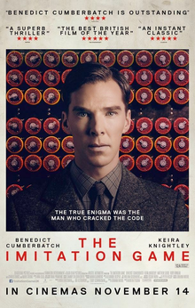

BIOGRAPHY of Alan Mathison Turing
I chose Turing because of an impressive movie I watched in college called "The Imitation Game". The genius Turing in the film has a quirky yet candid, captivating, and complex personality. However, he possesses an extraordinary aptitude for mathematics and computing, which allowed him to successfully decrypt one of the most challenging codes in history - the Enigma machine. In fact, I heard of Turing's name in elementary and middle school. Computer textbooks at the time described him as the "Father of Computer Science". Upon revisiting Turing's story as an adult, I realised his contributions to the computer field were pioneering.
In 1950, Turing published a famous paper in the Mind journal titled "Computing Machinery and Intelligence". The opening line posed a question, a question that many computer scientists and philosophers continue to ponder. Instead of providing an answer, Turing presented a method to determine the correctness of any answer-called "The Imitation Game"(Turing 2012). This method, later termed the Turing Test, profoundly impacted the philosophy and ethics of AI.
Additionally, Turing laid foundational concepts for the early computer ACE (Automatic Computing Engine). Although this computer was not built exactly according to his full design, his ideas influenced subsequent computer designs(Copeland 2005).
Turing's personal life was marked by tragedy in his later years. Homosexuality was illegal in the UK at the time, and Turing was found guilty and chose chemical castration as his punishment. On June 7, 1954, Turing died of cyanide poisoning, believed to be suicide.
After Turing's death, his contributions to computer science, his country, and the world were gradually recognized and acclaimed. In 1966, the Turing Award was established in his honor, representing the academic community's utmost respect. In 2009, UK Prime Minister Gordon Brown formally apologized to Turing on behalf of the government, for the judgement. On Christmas Eve in 2013, Queen Elizabeth II announced a posthumous pardon for Turing, and in 2017, the Alan Turing Law came into effect. A monument in a Manchester park reads: "Alan Mathison Turing, Father of Computer Science, Mathematician, Logician. Wartime Codebreaker, Victim of Prejudice".